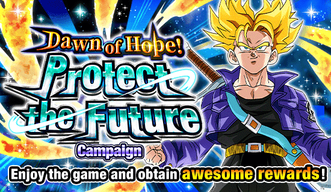
Foi interessante.
Pessoalmente essa foi a celebração em q eu voltei a jogar depois de uma pausa, então foi até legal, o conteúdo foi decente.
Pena q o maior problema foram os próprios cards..
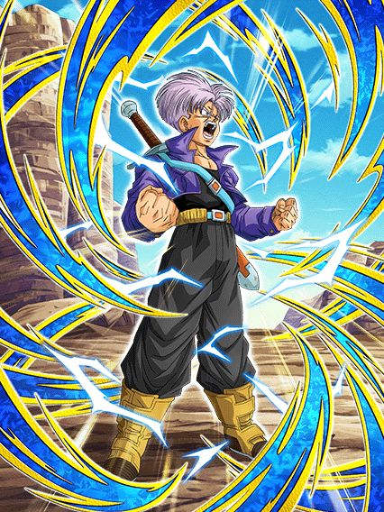
Eu diria que esse card foi um dos primordiais pra kits bizarros, desconexos e sem sentido.
Trunks.. seria este o mestre dos ataques básicos adicionais?
Esse cara é triste, ele só tem 200% de ATK e DEF e mais da metade da passiva dele são 2 adicionais que nem é listado se podem ou não ser supers e um adicional de 70% de ser super depois de ele atacar 3 vezes
Vamos considerar muito que esses adicionais sejam supers.. então o trunks tem chance de lançar 4 supers, cada um aumentando 30% de DEF no turno e um possível quinto super pelo hidden potential, olhando assim, qual a melhor coisa q vc pode colocar pra maximizar o dano dele?
Se vc pensou crítico, vc PENSOU ERRADO!
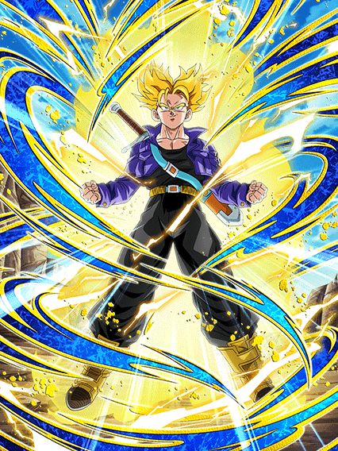
Reza a lenda da tela de KO do trunks.
Bom, vamo lá, pelo menos as condições de transformação não são muito horríveis, atacar 6 vezes até vai pq ele tem bastante adicional
Mas MEU AMIGO, que kit contraditório ein, pq o trunks literalmente no turno da transformação tem crítico garantido e nos turnos seguintes 70% de chance de critar, e agora, oq faz com o hidden potential?
Uma pena q esse crítico e blá blá blá é só metade da passiva e a outra metade é coisa inútil que ele ganha debuffando o inimigo, coisa que não faz sentido nenhum pq bosses grandes não podem ser debuffados e esse cara nem numa battle road dá pra levar pq lá ele não vai conseguir transformar a tempo 💀💀
É triste pq as animações dele são muito lindas, a ost é muito boa e ele tem mesmo uma tela de KO minimamente impossível de pegar mas hey a gente considera né
Enfim, um lançamento bem fraco que podia ser melhor se ele não fosse tão contraditório e estranho, se ele focasse só em crítico ou só adicional seria tão mais fácil..
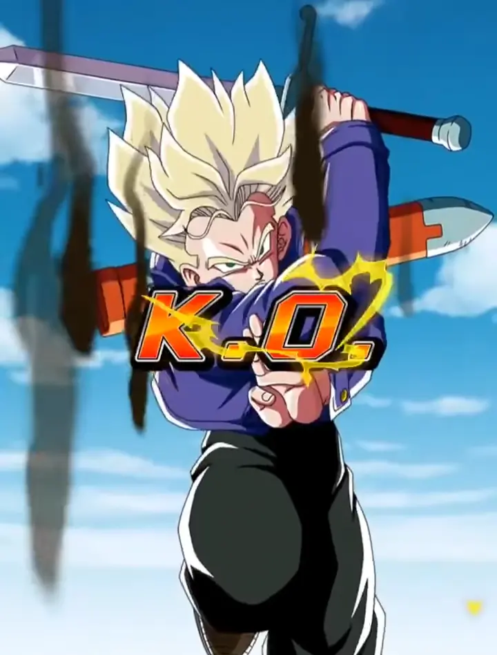
ESSA TELA DE KO É BOA DEMAIS MANO
Pq ele tinha q ser mid..?
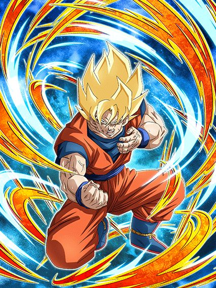
Um dos primeiros casos de "card secundário melhor q o dokkan fest" eu diria.
Esse cara não ironicamente é bem útil e ajuda muito em battle roads, ele é facilmente melhor q o trunks em quase qualquer aspecto kkkkk
Esse cara tem 300% de ATK e DEF e stacka 50% de ATK no super, isso já é bem mais decente e útil, mesmo que o dano dele não seja extremamente o melhor de todos
E aí vem a parte quebrada, esse cara é muito forte nos primeiros 5 turnos, já q ele tem 59% de chance de critar, 59% de chance de adicional E 59% de redução de dano
Tipo, é limitado a turnos? É.
Mas nesses primeiros 5 turnos ele consegue se segurar tranquilo contra a maioria dos bosses, é bem impressionante já q ele foi lançado antes do aniversário e tudo mais
Por sinal depois desse "buff de entrada" dele, ele ainda ganha 59% de DEF e mantém a redução de dano se sua vida estiver abaixo de 59% (meu Deus é muito 59)
Enfim, a parte mais chata dele é ele ter 50% de chance de perder 7% de HP a cada super, oq é triste já q vc quer stackar, mas não é algo tão horrível assim pelo menos, é um bom card.
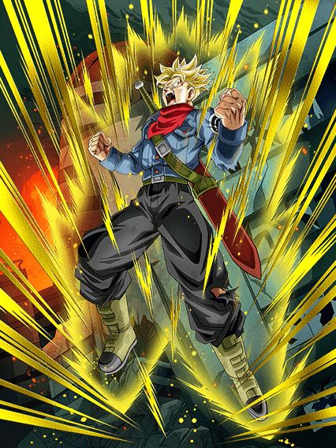
Dbs na celebração do Z não é meio estranho?
Esse cara é bem simples, ou vc tá enfrentando 2 inimigos ou mais, ou vc não leva ele no time
E mesmo assim, reconsidere levar ele pq ele nem é bom assim
Esse cara tem 160% de ATK e DEF contra 1 inimigo, mas contra 2 ele tem menos ATK mas 240% de DEF e 30% de chance de defesa ativa, oq é horrível podre
Acho q já deu pra entender esse cara.
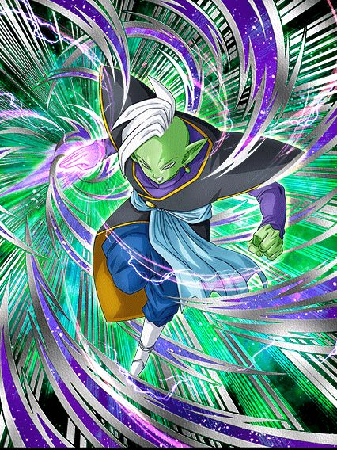
O tão falado "deus imortal" que ganha buffs quando perde HP?
O zamasu ficou bem estranho com esse eza, ele tem uma passiva com valores super baixos, ganha buffs quando tá com menos de 90% de HP q não faz nenhum sentido e ganha mais alguns buffs quando o inimigo tá debuffado, oq torna ele inútil e ainda pior que o trunks, que tristeza ein.
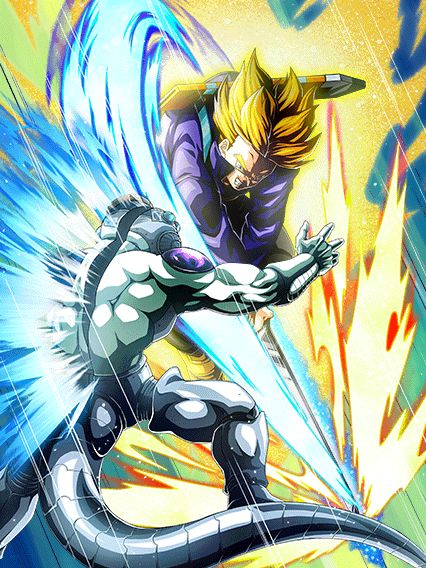
Não consigo não olhar pra essa arte e não pensar "2018 vibes."
Esse cara é minimamente interessante se vc estiver enfrentando um inimigo wicked bloodline, já q aí ele tem bastante Ki e dá crítico garantido, oq é mais ou menos já q ele tem 50% de chance de critar já na passiva mas tá ali
No geral, números bem baixos e nada de muito impressionante no fim das contas, podia ter sido melhor viu
Mais um pra colecionar e nada mais..
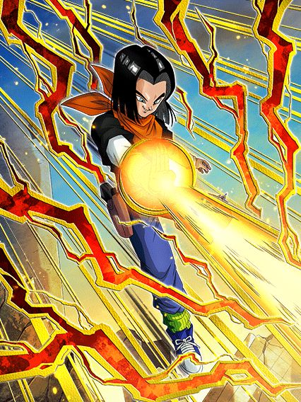 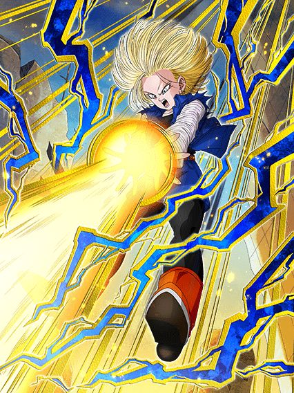
Duplinha F2P interessante.
Falar dos 2 de uma vez pq é literalmente impossível usar eles separados, é suicídio, eles não tem kit se não estiverem juntos
Mas enfim, os dois são semi nukers com mínimas diferenças, sendo a maior de todas o 17 ganhar mais ATK e DEF com orbs normais e a 18 só com rainbow orbs (coisa q limita ela muito mas ehh)
Esse problema aí é recompensado por a 18 ter 30% de chance de desvio enquanto o 17 tem 30% de crítico, no caso os dois são horríveis mas olha é melhor que nada
Eles tmb lançam um super adicional garantido se tiver um inimigo hybrid saiyan ou earthlings, oq é bem raro de ser ver em card F2P e é útil já que ambos stackam 50% de ATK e 20% de DEF no super
No geral do geral, bem decentes.
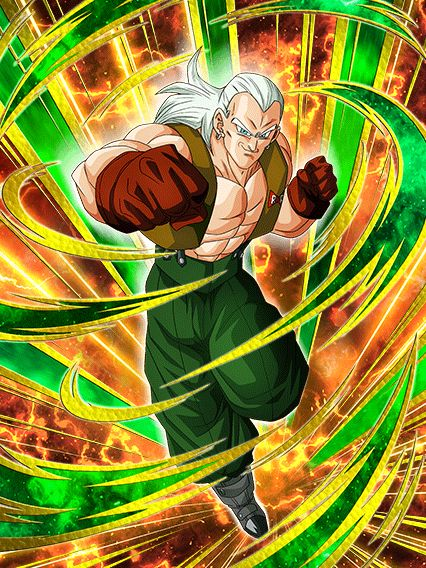 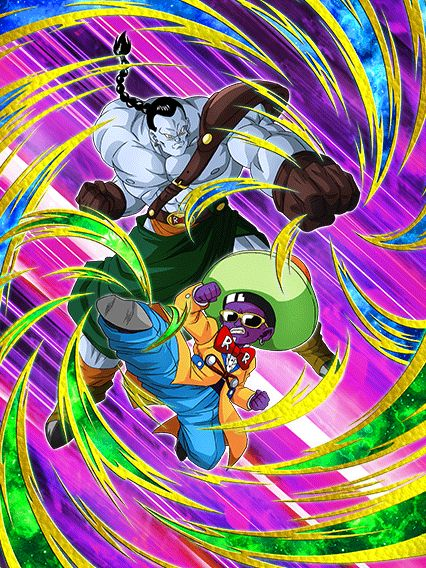
Huh.
Mais 2 cards que é melhor usar juntos pelo bem da sua sanidade, e até que o android 13 não é nada mal, ele tem 40% de redução de dano, stacka 20% de ATK e DEF no super, no geral bem decente
Sim ele precisa de um inimigo goku, vegeta, trunks ou piccolo pra ter metade da passiva? É, mas fazer o que né
O 14 e 15 tem um dano bem meh, uma defesa mid mas tem scouter permanente contanto que o android 13 esteja com eles e infelizmente eles são estranhos, já que eles dão suporte e ganham 30% de redução de dano, mas só se tiverem do lado de um personagem Android 13 fusão, não pode ser ele normal, oq não faz nenhum sentido, e o buff do scouter é só com um parceiro chamado Android 13 tmb, não que inclua Android 13 no nome, então eu realmente esqueci de sabar a lógica.
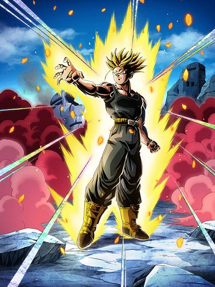
Se ele tivesse um pouco mais..
Aproveitar a chance pra dizer que ESSE CARA merece um dokkan fest, esse momento é bom demais cara
Enfim, o trunks não é o pior F2P de todos ou algo assim mas ele realmente precisava de mais umas 2 linhas de kit pra ajudar ele com alguma coisa
Ele tem 40% de ATK e DEF no turno, ganha mais 40% no super e é isso q ele tem no turno 1, a não ser q vc esteja contra 2 ou mais inimigos, aí ele tem mais 40% 💀
Já deu pra entender né? Não dá pra tankar nada com só isso de passiva
Acho q o mais triste foi terem a chance de fazer oq quiserem com o eza dele e decidiram dar uma mecânica de final blow que dá mais 40% de ATK e DEF, agora me diz, que boss que o trunks vai matar com 80% de ATK e DEF da passiva toda?
Acho q o que sobrou foi a arte dele ser bem maneira e ele ser um dos prime battle mais fácil de farmar
Pena q só fica pra coleção..
Você chegou ao fim dessa página!
Obrigado por ler tudo, e fica a vontade pra ver outras